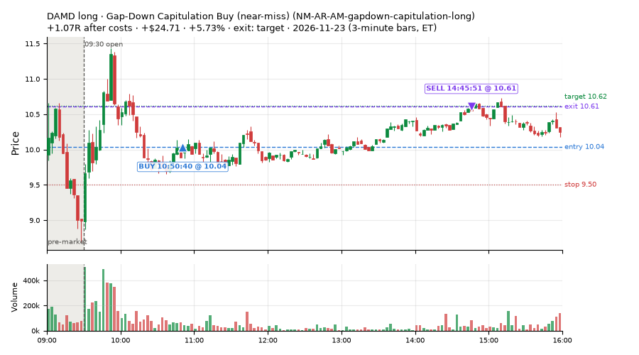
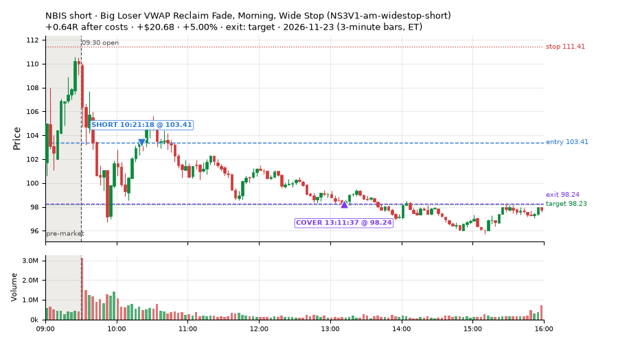
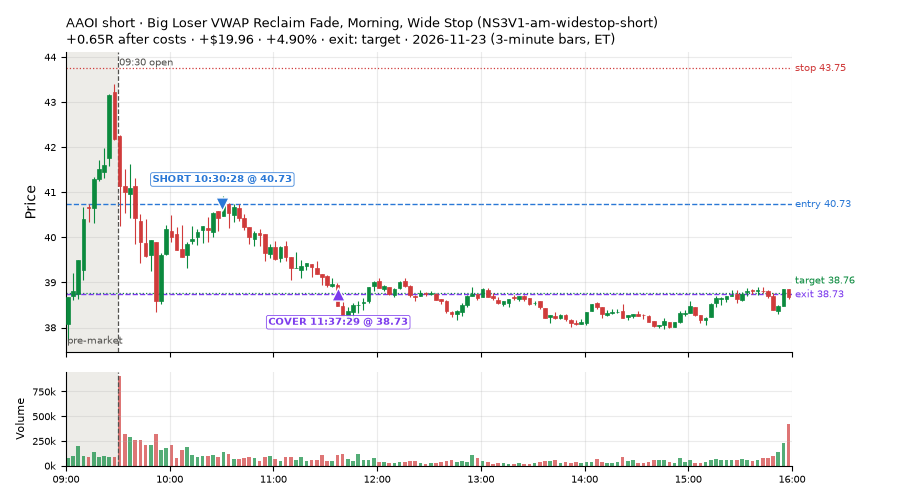
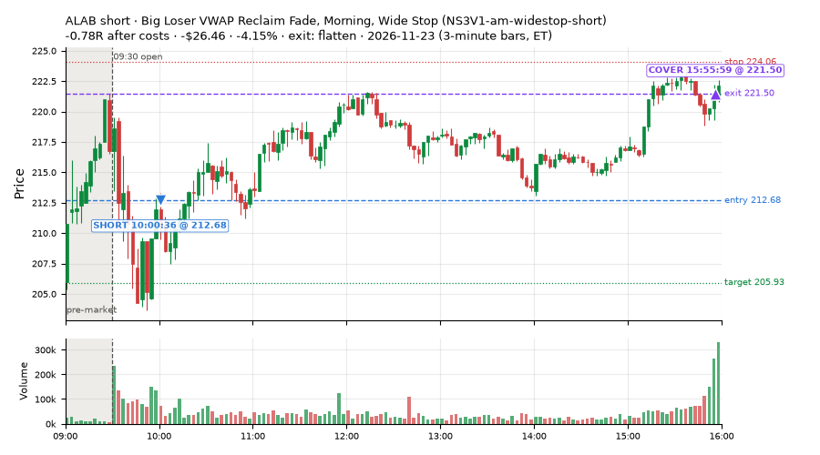
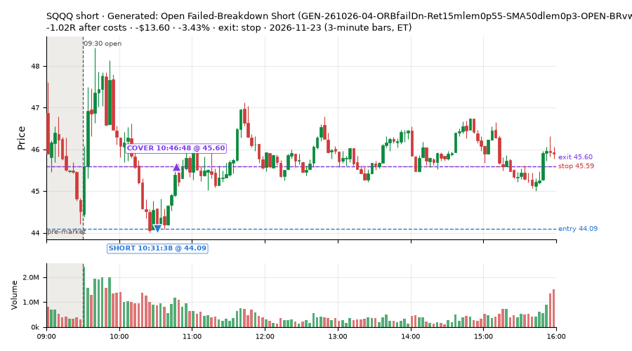
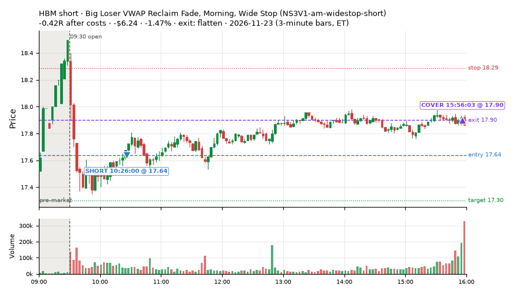
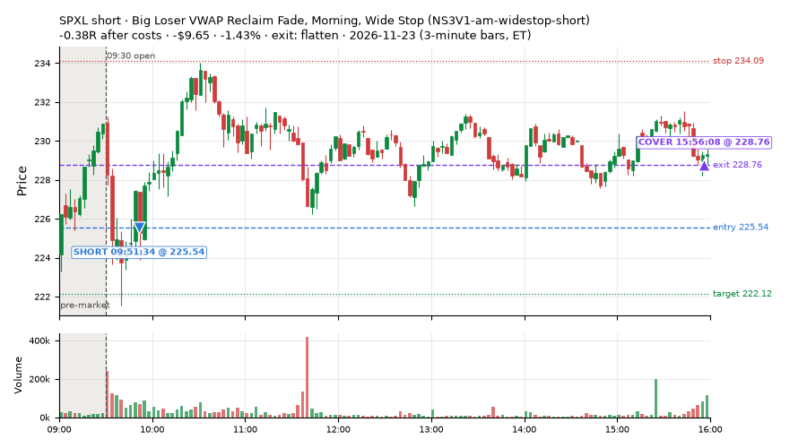
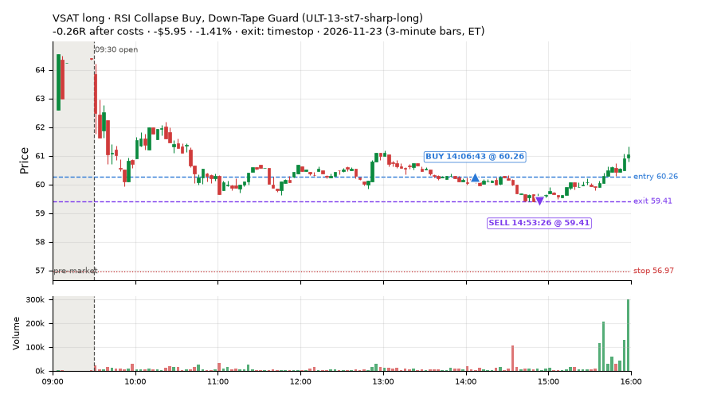

120 trades · win rate 72% · P/L $526.62
PROBATION: no live setup has passed both locked test periods. 10 owner-directed setups added 2026-10-08 (MarcoFlow top 5 + 5 new), untested live. RW6G1 (RW6 + VWAP band guard) added 2026-10-09, probation.

| Symbol | Setup | Side | In | Out | Entry | Exit | Exit reason | % gained | P/L |
|---|---|---|---|---|---|---|---|---|---|
| DAMD | Gap-Down Capitulation Buy (near-miss) (NM-AR-AM-gapdown-capitulation-long) | long | 10:50 | 14:45 | 10.04 | 10.61 | target | +5.73% | $24.71 |
| NBIS | Big Loser VWAP Reclaim Fade, Morning, Wide Stop (NS3V1-am-widestop-short) | short | 10:21 | 13:11 | 103.41 | 98.24 | target | +5.00% | $20.68 |
| AAOI | Big Loser VWAP Reclaim Fade, Morning, Wide Stop (NS3V1-am-widestop-short) | short | 10:30 | 11:37 | 40.73 | 38.73 | target | +4.90% | $19.96 |
| Symbol | Setup | Side | In | Out | Entry | Exit | Exit reason | % lost | P/L |
|---|---|---|---|---|---|---|---|---|---|
| ALAB | NS3V1-am-widestop-short | short | 10:00 | 15:55 | 212.68 | 221.50 | flatten | -4.15% | $-26.46 |
| SQQQ | GEN-261026-04-ORBfailDn-Ret15mlem0p55-SMA50dlem0p3-OPEN-BRvwgt0p5-holdtr-short | short | 10:31 | 10:46 | 44.09 | 45.60 | stop | -3.43% | $-13.60 |
| HBM | NS3V1-am-widestop-short | short | 10:26 | 15:56 | 17.64 | 17.90 | flatten | -1.47% | $-6.24 |
| SPXL | NS3V1-am-widestop-short | short | 09:51 | 15:56 | 225.54 | 228.76 | flatten | -1.43% | $-9.65 |
| VSAT | ULT-13-st7-sharp-long | long | 14:06 | 14:53 | 60.26 | 59.41 | timestop | -1.41% | $-5.95 |








Signal to fill: median 2s, 90th percentile 4s (120 trades). Bars close each minute; the order follows the bar close.
Best excursion (MFE): median 0.43R; worst (MAE) median 0.28R. 16% of trades never got +0.25R in our favour; 0 reached +1R and still closed at or below 0.
| Symbol | Setup | Best R | Worst R | Closed R |
|---|---|---|---|---|
| SYY | NM-MF3-qqqdn-gapdn-FD | +0.31 | -1.04 | -1.08 |
| SRE | MF4-h40-open-flowsell | +0.25 | -1.01 | -1.12 |
| ALAB | NS3V1-am-widestop-short | +0.46 | -0.93 | -0.78 |
| SQQQ | GEN-261026-04-ORBfailDn-Ret15mlem0p55-SMA50dlem0p3-OPEN-BRvwgt0p5-holdtr-short | +0.02 | -1.04 | -1.02 |
| KMB | RW3-gapdn-rsi5pop-flowsell-short-FD-RQa-1230 | +0.52 | -0.59 | -0.41 |
| Entry time | Trades | Win | Avg R | P/L |
|---|---|---|---|---|
| 09:50-10:30 | 53 | 72% | +0.23 | $231.29 |
| 10:30-11:30 | 56 | 77% | +0.23 | $292.43 |
| 11:30-13:00 | 6 | 33% | +0.01 | $2.64 |
| 13:00-14:00 | 3 | 100% | +0.49 | $7.31 |
| 14:00-16:00 | 2 | 0% | -0.23 | $-7.05 |
| Setup | Trades | Win | Avg R after costs | Adj R (net of SPY) | Avg R ex-market (all sessions) | P/L |
|---|---|---|---|---|---|---|
| Generated: Open Tight-Range Sell-Off Buy (GEN-261020-08-FlowShiftlem0p41-Compress6le0p077-OPEN-QQQup-t05s05-long) | 1.0 | 100% | +0.22 | +1.23 | – | $0.70 |
| Generated: Lunch Choppy RSI Turn Buy (GEN-261023-07-RSIslopege9p1-BarRngATRge0p087-VWAPcrossesge8-LUNCH-BRvwgt0p7-hold-long) | 3.0 | 100% | +0.49 | +0.70 | +0.37 (beta +3.28, n 36) | $7.31 |
| Generated: Open Failed-Breakdown Short (GEN-261026-04-ORBfailDn-Ret15mlem0p55-SMA50dlem0p3-OPEN-BRvwgt0p5-holdtr-short) | 2.0 | 0% | -0.62 | -0.59 | -0.10 (beta -0.03, n 11) | $-16.38 |
| Gap-Down Recovery Fade — WB4: earlier cut-off, deeper gap, 75-min hold (L3-gap-slope-fromopen-FD-WB4) | 4.0 | 25% | -0.04 | -0.19 | -0.00 (beta +1.53, n 31) | $-3.80 |
| Early Sellers, Strong Heat (MF4-h40-open-flowsell) owner-directed; holdouts once: Sep-Oct -0.117R n147, Apr-Jun -0.017R n735 | 6.0 | 67% | +0.02 | -0.76 | -0.12 (beta -0.39, n 56) | $0.02 |
| Gap-Down Capitulation Buy (near-miss) (NM-AR-AM-gapdown-capitulation-long) | 8.0 | 100% | +1.00 | +1.27 | -0.19 (beta +0.54, n 93) | $85.47 |
| Early Sellers into a Pop (index down, no gap up) (near-miss) (NM-MF3-qqqdn-gapdn-FD) | 2.0 | 50% | -0.51 | -0.64 | -0.08 (beta -0.48, n 70) | $-2.72 |
| Big Loser VWAP Reclaim Fade, Morning, Wide Stop (NS3V1-am-widestop-short) | 86.0 | 76% | +0.20 | +0.14 | -0.03 (beta -0.28, n 173) | $460.23 |
| Remedy-Q: Gap-Down Pop Fade, Heavy Selling, no entries after 12:30 (RW3-gapdn-rsi5pop-flowsell-short-FD-RQa-1230) | 3.0 | 67% | +0.73 | +0.64 | – | $3.52 |
| Big Gainer Fade, VWAP Band Guard (all day) — WB3: from 11:00, stretched reclaim, liquid, no gap-up runners (RW6G1-ns2-up3-vwap2sd-short-FD-WB3) | 1.0 | 0% | -0.22 | -0.40 | – | $-1.70 |
| Afternoon Volatile Dip Buy (broad) (ULT-07-pm-volatile-dip-long) | 1.0 | 0% | -0.19 | -0.44 | +0.03 (beta +0.48, n 5) | $-1.10 |
| RSI Collapse Buy, Down-Tape Guard (ULT-13-st7-sharp-long) | 3.0 | 33% | -0.05 | -0.04 | -0.08 (beta +0.90, n 9) | $-4.93 |
Market direction (SPY, beta 1) accounted for $85.92 of today's $526.62; the rest ($440.70) came from the setups themselves. Avg R net of SPY: +0.16 (incl. a hedge leg's cost; report only).
20 setups live today. Today: 238 signals, 120 taken, 3 lost because another setup held the symbol (1%). Since 2026-10-12 (31 sessions): 13352 signals, 6687 taken, 821 lost to other setups (6%). Peak open positions today 101 of 800 slots. Earnings blackout removed 148 symbols before scanning.
Simulated playing time (not live): 6643 what-if trades of signals not taken, avg -0.07R, 58% winners; of them 821 lost to another setup (avg -0.17R).
Silent: GEN-261029-04-Ret15mge0p54-RVolDayle0p59-VWAPcrossesle1-LUNCH-SPYgt0p25-hold-long, GEN-261026-01-UpWickge0p59-Since950ATRlem0p61-AM-BRopgt0p5-holdtr-short, LD4-st4-breadthup-t1s05-long, GEN-261028-01-MACDhge0p12-Since950ATRlem0p25-LATE-SPYgt0p5-holdtr-long, LD8-spy-dip030-breadthturn-spxl-holdtr-long, GEN-261027-10-FlowShiftlem1p2-MACDhge0p079-SMA20dge0p59-LUNCH-BRopgt0p65-holdtr-long, LD1-ns1-breadthup-t05s1-long, CWT04-backside-lh-a25-short, CWT04-backside-vwaptest-a25-short · Crowded out: NS3-failed-vwap-reclaim-short-FD · Starved: exhaustion_short-FD, MF5-flowsell-vwapup-rsi5hi, NS5-sma50-flush-oversold-long-FD, RW4-ns3-adv150-short-FD, MF2-open-rsimidhi-flowsell
| Prio | Setup | Today sig / taken | Sessions | Signals / taken / trades | Taken/day | Expected/day | Lost to other setups | Lost to (setup n) | Top skip reasons | SIMULATED: not-taken n / avg R / win | Verdict |
|---|---|---|---|---|---|---|---|---|---|---|---|
| 1 | Remedy-Q: Gap-Down Pop Fade, Heavy Selling, no entries after 12:30 RW3-gapdn-rsi5pop-flowsell-short-FD-RQa-1230 | 5 / 3 | 1 | 5 / 3 / 3 | 3.00 | – | 0 | – | not shortable / shorts off 1, spread / quote / size 1 | 2 / +0.62R / 100% | ok 15.0 entries/week |
| 2 | Gap-Down Recovery Fade — WB4: earlier cut-off, deeper gap, 75-min hold L3-gap-slope-fromopen-FD-WB4 | 46 / 4 | 5 | 263 / 31 / 31 | 6.20 | – | 7 | L3-gap-slope-fromopen-FD-WB4 7 | not shortable / shorts off 202, spread / quote / size 22, symbol held by another setup 7 | 231 / -0.06R / 48% | ok 31.0 entries/week |
| 3 | Early Sellers, Mid-High RSI (all day) — WB3: skip rising 20-SMA / gap-ups > 2% + RSI 55-62 + heat -40..-30 + ADV $150M MF2-open-rsimidhi-flowsell-FD-WB3 | 0 / 0 | 5 | 54 / 28 / 28 | 5.60 | – | 2 | CWT14-failbrk-pdl-p05-R2A-long 2, CWT14-failbrk-pdl-p10-long 2 | spread / quote / size 10, other 10, symbol held by another setup 2 | 26 / -0.17R / 38% | ok 28.0 entries/week |
| 4 | Big Gainer Fade, VWAP Band Guard (all day) — WB3: from 11:00, stretched reclaim, liquid, no gap-up runners RW6G1-ns2-up3-vwap2sd-short-FD-WB3 | 2 / 1 | 5 | 12 / 2 / 2 | 0.40 | – | 0 | – | not shortable / shorts off 10 | 10 / +0.53R / 80% | slow 2.0 entries/week; ~30 weeks to 60 trades |
| 5 | Generated: Midday Spike Fade (SPY down) GEN-261028-07-Z12ge1p6-Eff6le0p034-MID-SPYltm0p25-hold-short | 1 / 0 | 6 | 30 / 18 / 18 | 3.00 | – | 0 | – | spread / quote / size 9, other 3 | 12 / +0.33R / 67% | ok 15.0 entries/week |
| 6 | Generated: Late Choppy Dip Buy (SPY down) GEN-261023-08-RSIslopelem5p5-VWAPcrossesge8-SMA50dlem1p7-LATE-SPYltm0p5-t1s1-long | 0 / 0 | 6 | 32 / 17 / 17 | 2.83 | – | 0 | – | spread / quote / size 7, other 6, price through stop/target 2 | 15 / -0.28R / 20% | slow 14.2 entries/week; ~4 weeks to 60 trades |
| 7 | Generated: PM Upper-Band Fade (weak mkt) GEN-261026-07-Flow3ge0p56-BBpctge0p98-ADX7le34-PM-BRvwlt0p3-holdtr-short | 0 / 0 | 6 | 297 / 163 / 163 | 27.17 | – | 8 | CWT14-failbrk-pdl-p05-R2A-long 4, CWT14-failbrk-pdl-p10-long 3, NM-AR-AM-gapdown-capitulation-long 1 | other 47, spread / quote / size 29, per-setup cap 26 | 134 / +0.23R / 62% | ok 135.8 entries/week |
| 8 | Generated: Open Failed-Breakdown Short GEN-261026-04-ORBfailDn-Ret15mlem0p55-SMA50dlem0p3-OPEN-BRvwgt0p5-holdtr-short | 6 / 2 | 6 | 21 / 11 / 11 | 1.83 | – | 0 | – | spread / quote / size 7, not shortable / shorts off 3 | 10 / -0.93R / 0% | slow 9.2 entries/week; ~7 weeks to 60 trades |
| 9 | Generated: Open Tight-Range Sell-Off Buy GEN-261020-08-FlowShiftlem0p41-Compress6le0p077-OPEN-QQQup-t05s05-long | 1 / 1 | 6 | 1 / 1 / 1 | 0.17 | – | 0 | – | – | 0 / – | slow 0.8 entries/week; ~72 weeks to 60 trades |
| 10 | Generated: Lunch Quiet Breakout Buy (SPY up) GEN-261029-04-Ret15mge0p54-RVolDayle0p59-VWAPcrossesle1-LUNCH-SPYgt0p25-hold-long | 0 / 0 | 6 | 0 / 0 / 0 | 0.00 | – | 0 | – | – | 0 / – | silent no signals in 6 session(s); no expected rate on file |
| 11 | Generated: Open VWAP Reclaim Buy (down stock) GEN-261019-01-VWAPxUp-ATRdge3p6-FromPCATRlem0p68-OPEN-BRvwgt0p7-t05s05-long | 2 / 0 | 6 | 24 / 6 / 6 | 1.00 | – | 0 | – | other 12, spread / quote / size 6 | 18 / -1.06R / 6% | slow 5.0 entries/week; ~12 weeks to 60 trades |
| 12 | Generated: Morning Upper-Wick Short (falling) GEN-261026-01-UpWickge0p59-Since950ATRlem0p61-AM-BRopgt0p5-holdtr-short | 0 / 0 | 6 | 0 / 0 / 0 | 0.00 | – | 0 | – | – | 0 / – | silent no signals in 6 session(s); no expected rate on file |
| 13 | Generated: Lunch Choppy RSI Turn Buy GEN-261023-07-RSIslopege9p1-BarRngATRge0p087-VWAPcrossesge8-LUNCH-BRvwgt0p7-hold-long | 8 / 3 | 6 | 65 / 36 / 36 | 6.00 | – | 3 | NS3V1-am-widestop-short 2, exhaustion_short-FD 1 | other 20, spread / quote / size 6, symbol held by another setup 3 | 29 / -0.54R / 21% | ok 30.0 entries/week |
| 14 | Early Sellers into a Pop (index down, no gap up) (near-miss) NM-MF3-qqqdn-gapdn-FD | 3 / 2 | 24 | 134 / 70 / 70 | 2.92 | 4.90 | 5 | NM-AR-AM-gapdown-capitulation-long 5, CWT13-vwapstretch-z05-long 1 | spread / quote / size 31, not shortable / shorts off 14, other 14 | 64 / +0.28R / 64% | slow 14.6 entries/week; ~4 weeks to 60 trades |
| 15 | Early Sellers, Strong Heat MF4-h40-open-flowsell | 10 / 6 | 9 | 155 / 56 / 56 | 6.22 | 7.24 | 2 | CWT14-failbrk-pdl-p05-R2A-long 1, NM-AR-AM-gapdown-capitulation-long 1 | spread / quote / size 72, other 13, not shortable / shorts off 12 | 99 / +0.07R / 73% | ok 31.1 entries/week |
| 16 | Big Loser VWAP Reclaim Fade, Morning, Wide Stop NS3V1-am-widestop-short | 134 / 86 | 22 | 325 / 173 / 173 | 7.86 | 5.30 | 7 | NS3V1-am-widestop-short 7, NM-RWR3-ns3-qqqup-early-short 1, NM-RWN3-ns3-spyup-early-short 1 | spread / quote / size 97, not shortable / shorts off 45, symbol held by another setup 7 | 152 / +0.06R / 62% | ok 39.3 entries/week |
| 17 | Gap-Down Capitulation Buy (near-miss) NM-AR-AM-gapdown-capitulation-long | 9 / 8 | 26 | 146 / 93 / 93 | 3.58 | – | 3 | MF4-h40-open-flowsell 2, CWT14-failbrk-pdl-p05-R2A-short 1 | spread / quote / size 43, other 7, symbol held by another setup 3 | 53 / -0.17R / 43% | ok 17.9 entries/week |
| 18 | RSI Collapse Buy, Down-Tape Guard ULT-13-st7-sharp-long | 10 / 3 | 2 | 19 / 9 / 9 | 4.50 | – | 1 | GEN-261026-07-Flow3ge0p56-BBpctge0p98-ADX7le34-PM-BRvwlt0p3-holdtr-short 1 | spread / quote / size 9, symbol held by another setup 1 | 10 / -0.24R / 40% | ok 22.5 entries/week |
| 19 | Late-Day ETF Pop Fade (WB4 mirror) ULT-HV1-etf-late-pop-fade-short-X | 0 / 0 | 2 | 14 / 8 / 8 | 4.00 | – | 1 | GEN-261019-03-Ret15mATRlem0p12-FromOpenATRlem0p34-SMA20slopege0p29-PM-BRoplt0p5-t05s1-long 1 | not shortable / shorts off 5, symbol held by another setup 1 | 6 / -0.55R / 33% | ok 20.0 entries/week |
| 20 | Afternoon Volatile Dip Buy (broad) ULT-07-pm-volatile-dip-long | 1 / 1 | 2 | 5 / 5 / 5 | 2.50 | – | 0 | – | – | 0 / – | slow 12.5 entries/week; ~5 weeks to 60 trades |
Every trade is attached as a CSV you can open and edit in Excel or Google Sheets. Live page: https://misiti15.github.io/MCF/live/